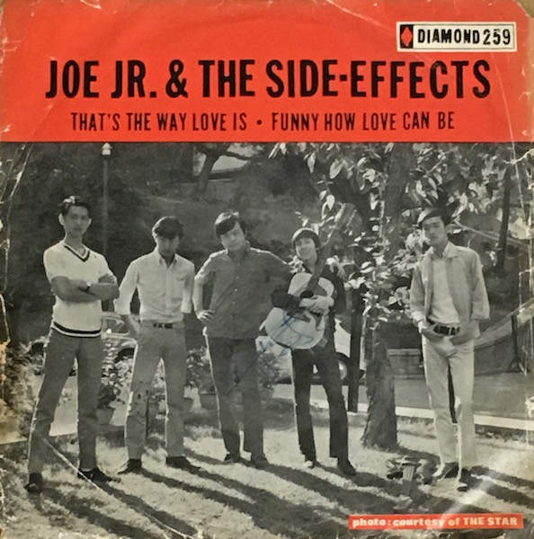

7"
That's The Way Love Is / Funny How Love Can Be
Joe Junior & Side Effects
Media: — · Sleeve: —
—
Personal
Discogs SuggestedCA$26.68
Discogs MedianCA$26.68
Discogs HighCA$26.68
- Physical Copy ID
- BB-LP7-002
- Year
- 1967
- Label
- Diamond (7), Diamond (7)
- Catalog #
- 259, D. 259 x 45
- Country
- HKHong Kong
- Genre / Style
- Rock, Pop · Beat, Pop Rock